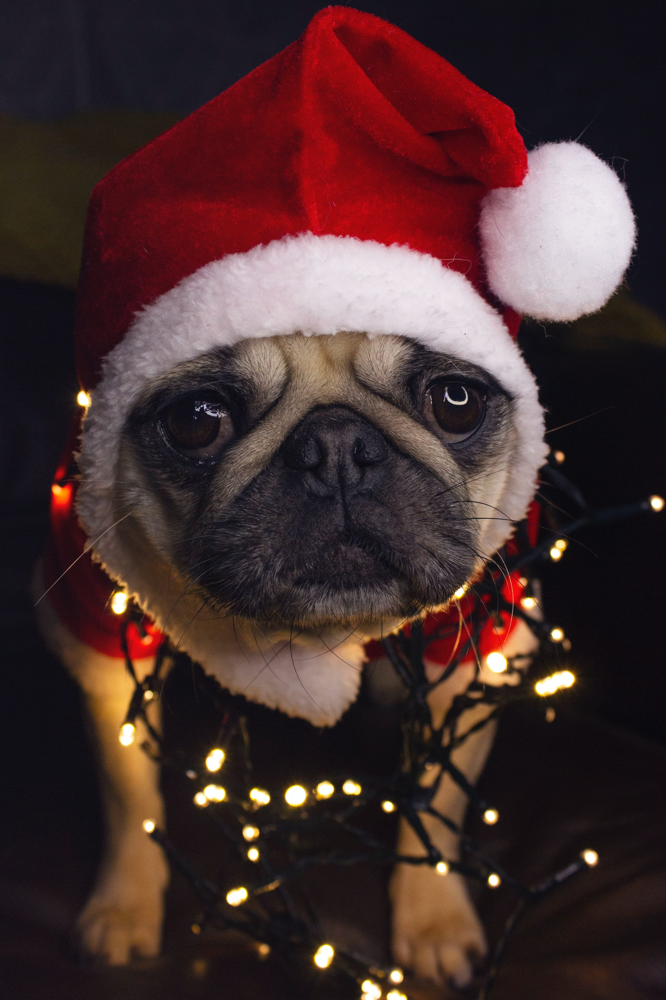
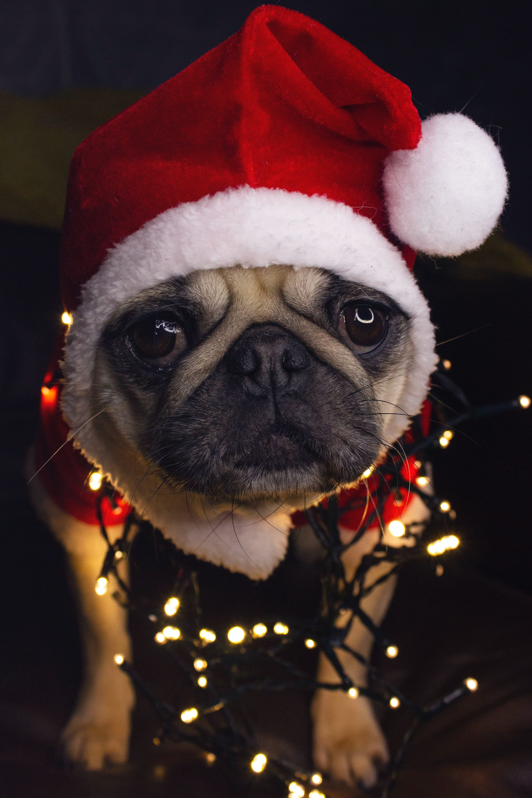

Nuestro Servicio

1Alimentacion
Es muy importante para mantener a nuestro a animales de compañía que ingieran una dieta equilibrada que satisfaga sus necesidades energéticas y proporcione los nutrientes adecuados. Lo ideal, tanto para perros como para gatos, es que consuman alimento seco , adaptado a cada etapa de crecimiento y a cada necesidad. Nunca deben consumir alimentos crudos ya que estos podrían ser fuente de enfermedades parasitarias.
2Higiene
Baño : Los expertos no se ponen de acuerdo en lo relativo a la frecuencia en la que se deben realizar los baños. En general esta no deberá ser inferior a una vez al mes. Algunos autores señalan que se debe hacer cuando lo necesitan, por ejemplo cuando el pelo está sucio. Aunque los gatos suelen ser menos tolerantes que los perros con el baño es posible hacer que el gatito lo acepte y que se acostumbre a ello. Se recomiendan geles especiales para animales de compañía. Cepillado : La mejor manera de mantener su higiene sin alterar su piel es el cepillado diario. Oídos : Se deben limpiar con una gasa. Hay productos específicos, se echan en el conducto auditivo y se masajea la zona, procediéndose después al limpiado con la gasa. Uñas : En perros que no desgasten bien hay que cortarlas, sobre todo en los espolones. Para los gatos existen en el mercado accesorios para arañar de forma que así los gatos mantienen las uñas en perfecto estado. Revisión dental: oprimiendo suavemente la articulación de la boca con los dedos hará que su gato abra la boca y así podrá ver el estado de sus dientes. Los dientes se limpian solos al masticar el pienso seco o morder juguetes especiales. El sarro y el mal aliento han de ser tratados por el veterinario.
3Educacion
Los perros son animales sociales y jerárquicos: esto significa que necesitan desde cachorros conocer y asumir su “puesto” en la familia y fuera de ella (en el parque, ante la presencia de personas extrañas en casa, en los lugares habituales de paso como la clínica veterinaria, en casas de familiares, etc..) Existe un periodo fundamental en el desarrollo de la conducta denominado “periodo de sensibilización ” que abarca desde las 3 a las 10 semanas y durante el cual el cachorro debe asimilar todo lo que ocurre en su entorno. La socialización del animal hace que acepten mejor a otros animales, tanto de su propia especie como de otras, y la habituación les hace capaces de enfrentarse a los estímulos ambientales que se van a encontrar a lo largo de su vida. Les debemos enseñar unas normas de convivencia básicas mediante el aprendizaje de conductas de obediencia muy sencillas. Para ello se debe decir su nombre antes de darle una orden usando una frase corta. Siempre se debe trabajar con refuerzos positivos. Por ejemplo si tira de la correa, acórtele la distancia y prémiele cuando no tire, enséñele el “sit” (sentarse) presionando suavemente su parte trasera y para hacer que se tumbe en el suelo puede apretar su lomo hacia abajo y tirar de sus patas delanteras hacia delante. Se deben corregir, además comportamientos indeseables como es la mordida. Para ello sujete el hocico del perro con una mano por encima y ejerza más o menos fuerza según la situación y la raza del perro.
Galeria
 



Expertos en:
Anality

SEO